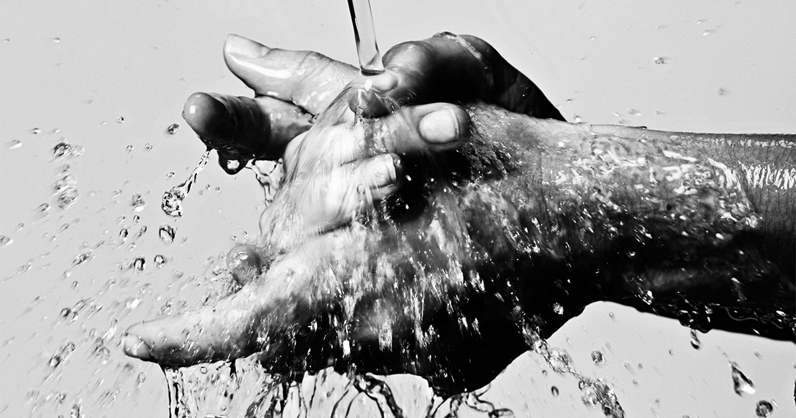
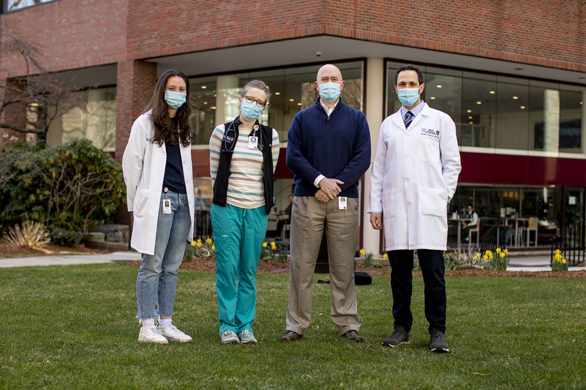
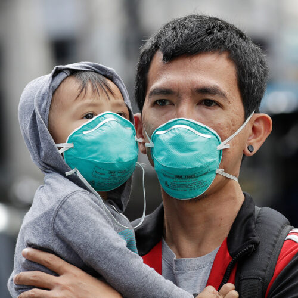
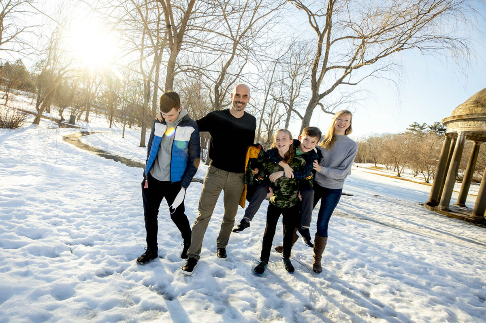

How to reduce the spread of coronavirus
Coronavirus Update series, in which Harvard specialists in epidemiology, infectious disease, economics, politics, and other disciplines offer insights into what the latest developments in the COVID-19 outbreak may bring.
Turns out Mom was right.
Health experts say the best, simplest ways to prevent the spread of COVID-19, the novel coronavirus that has killed more than 3,200 people and affected more than 100,000 around the world, follow the tried and true cold-season admonishments given out for generations.Wash your hands.Cover your mouth and nose when you cough or sneeze.Avoid touching your face.Stay home if you are sick.
But some of the advice has gotten a little more specific.
COVID-19 is spread through respiratory droplets, which typically travel about three to six feet and settle on surfaces, where they can live for a few hours up to several days, according to the World Health Organization.There is a risk of catching the disease by inhaling those particles, but there is a more significant risk of getting it by touching surfaces, such as desks, handrails, or doorknobs, where those droplets may have settled.
'The disease transmission goes from a cough or sneeze to a surface to your hand to your face, and that’s how people get infected,' said Paul Biddinger, director of the Emergency Preparedness Research, Evaluation, and Practice Program, Harvard T.H.Chan School of Public Health.'Good hand washing really matters.If people cough or sneeze into their elbow, that limits the spread of respiratory secretions.What all of us can do together is follow basic hygiene measures that will actually slow the spread of disease in communities.'
'Most people don’t wash their hands very well.As silly as it sounds to go watch a YouTube video on handwashing, people should do it to learn how to do it properly.'
Basic hygiene measures may seem obvious, but they are important.Washing hands with plain soap and plain water kills viruses, but only if it’s done thoroughly and often.Hands should be scrubbed for at least 20 seconds, the time it takes to sing the 'Happy Birthday' song twice, to ensure germs won’t be transferred to objects or spread from person to person.
'Most people don’t wash their hands very well,' said Biddinger.'As silly as it sounds to go watch a YouTube video on handwashing, people should do it to learn how to do it properly.Washing hands has been clearly proved to decrease disease transmission and lower your chance of getting infected.'
Hand sanitizers may be helpful, if they contain at least 60 percent alcohol, according to the Centers for Disease Control and Prevention.But if your hands are dirty or greasy the sanitizer won’t work, which is why the agency favors hand washing.A 2006 study found that hand washing can cut the risk of respiratory infection by 16 percent and a 2008 study showed a 21 percent reduction.
Experts acknowledge the hardest of the self-protective measures to follow is not touching one’s face.A 2015 study that observed medical students at the University of New South Wales found that each of them touched their face 23 times per hour on average.
It’s important to avoid face touching because germs can get into the body through the eyes, nose, and mouth.Contaminated hands can transfer the virus when people rub their eyes, scratch their noses, or touch their mouths.'We all reflexively touch our face,' said Biddinger.'But trying to be more mindful of touching our face decreases our chance of infection.'
The importance of following basic hygiene measures was highlighted by Mark Lipsitch, professor of epidemiology at the Harvard Chan School and director of the Center for Communicable Disease Dynamics.
'Slowing the epidemic is what we have to do if we can’t stop it,' Lipsitch said in a Facebook Live event on Monday sponsored by the Forum at Harvard Chan School and PRI’s 'The World.'
'All those measures, small as some of they may be, help to slow the epidemic.There is a real coalescence between individually self-protective measures and measures that will benefit the community.Basic hygiene and self-protection measures are in fact socially beneficial.'
In the U.S., the coronavirus death toll rose to 12, and according to the Centers for Disease Control and Prevention, and the number of reported COVID-19 cases climbed to 148 across 13 states as of March 5.The New York Times reported 163 cases in 18 states.
The World Health Organization said Tuesday that the new coronavirus is deadlier than the common flu, with a mortality rate of 3.4 percent.Seasonal flu kills fewer than 1 percent of those infected.
As the number of new cases outside China surges, concerns of a global pandemic are also rising.According to a March 4 report by the World Health Organization, there were only 120 new cases in China in the previous 24 hours, while 2,223 new cases were reported around the world.Eighty percent of the cases outside China were reported in South Korea, Italy, and Iran.
Health experts expect to see more coronavirus cases in New England, Massachusetts, and the Boston area, but Biddinger reminded the public to consult reputable information sites, such as the CDC or the Massachusetts Department of Health, to quell unfounded fears.
'Fear is not productive, and fear doesn’t protect you from illness in any way,' said Biddinger.'I encourage people to avoid the tremendous amount of misinformation that is out there on different social media sites.People need to get good information because being informed decreases fear, and they need to take basic hygiene measures that protect them.And even though those measures don’t sound very exciting, they are absolutely proved, by the data, to protect your health.'
Posted On: 2020-03-05T00:00:00
Posted By: Liz Mineo




Content Date: 2020-03-05
Download Date: 2021-04-21
Document ID: L0C04ASVY